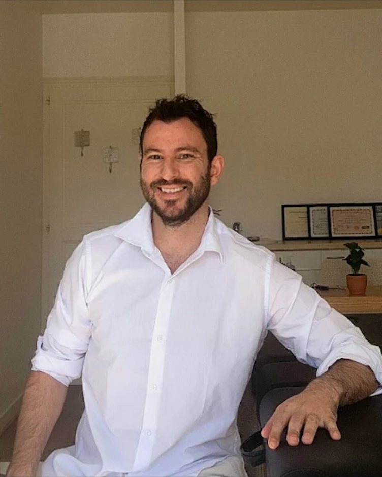

Bonne direction
- Tu as une idée en tête, et tu n'oses pas.
- Tu doutes, tu repousses, tu attends le bon moment.
- Tu as dix projets et aucun de lancé.
- Tu veux bouger, pas seulement en parler.
Balade Déclic · au pied du Salève
1h30 de marche à plat, au pied du Salève. On rit, on lâche le frein, et tu repars avec ton premier pas concret. Celui que tu repousses depuis des mois.

Pour qui ?
Ce n'est pas un manque de volonté. Ton corps freine. On va lâcher le frein.
Le jeu · 20 cartes
Fais ton premier pas avant même qu'on se rencontre. Certaines cartes sortent vraiment du cadre.
Pas de cabinet, pas de divan, pas de gourou
La Balade Déclic : 90 minutes à plat, au pied du Salève. Six étapes, une arrivée : ton premier pas. Fais défiler ou touche une étape.
Départ · 0 min
« Prêt à jouer ? » On choisit l'idée qui te met le plus en joie.
On repère ce qui te bloque le plus aujourd'hui. Un seul blocage.
Respiration, mouvement et rire pour retrouver un corps en sécurité.
Un soin en magnétisme pour dégager le blocage et ancrer la sécurité ou l'élan. Tu peux aussi choisir de ne pas le recevoir.
Tu vis ton projet comme s'il existait déjà.
Tu tires ton défi : ton premier pas, à faire dans la semaine.
Une semaine après, on fait le point ensemble.
Jeu · 2 minutes
8 questions, ton profil (en surchauffe, en veille ou prêt à décoller) et un exercice d'une minute à faire tout de suite.
Une balade pour faire ton premier pas. Quatre pour lancer ton projet.
1h30 · en solo · à plat, au pied du Salève
140 €
Garantie premier pasSi tu repars sans ton premier pas, ou sans un minimum d'élan, ta prochaine séance est offerte.
Allez, je me lance4 séances de 1h30 · en solo · sur 2 mois
490 €
En quatre balades, ton projet sort de ta tête : tu as fait sa première version concrète et tu l'as montrée à quelqu'un.
Je pars pour 4 baladesTu hésites ? On se fait un coup de fil sans filtre.
15 minutes, gratuit, zéro discours de vente. Tu me racontes ton projet, je te dis cash si la balade peut t'aider. Et si c'est non, je te le dis aussi.
Tu viens pour une séance de magnétisme ? Elle a sa page : 1h, en pleine nature de mai à septembre (90 €), par téléphone d'octobre à avril (60 €). Voir le magnétisme
Les séances ne sont pas des actes médicaux et ne remplacent pas un avis ou un traitement médical.
Toute ma vie, je me suis senti hors du cadre. Trop d'idées, trop d'élan, et cette impression d'attendre une autorisation qui ne venait jamais, jusqu'au jour où j'ai compris que c'était à moi de me la donner.
Je connais la tête en pagaille, la peur qui serre le ventre, l'envie d'oser qui reste coincée. Ce qui m'a manqué, c'est quelqu'un qui voie mon potentiel et me dise : vas-y, on y va ensemble, je suis là.
Aujourd'hui, c'est ce que je suis pour les autres.
Je ne répare pas ta vie. Je vois la Formule 1 en toi, et je te mets sur la piste.
Tout a changé en 2023, après le départ de ma grand-mère Odette : plus de sensibilité, des ressentis plus fins. Depuis deux ans, je mets ce que je ressens au service des autres.
Je suis accompagnateur holistique : je travaille avec le corps, le jeu et le magnétisme. Le cabinet, ce n'est pas pour moi. Je crois qu'on se débloque en mouvement, alors on sort : on marche, on rit, et le soin se fait dehors. L'hiver, je propose aussi des séances de magnétisme à distance.
De l'idée qui tourne en rond au premier pas réel. Tu n'as pas besoin d'une autorisation de plus : tu as besoin de quelqu'un qui croit en toi.
Tu veux m'entendre avant de me rencontrer ? Écoute mes podcasts sur YouTube.
Leurs mots, laissés sur Google après une séance de magnétisme.
5 sur 5
« Toujours à l’écoute et sans jugement. […] Si vous vous trouvez dans une période difficile vous pouvez lui faire confiance les yeux fermés. »
5 sur 5
« […] je me suis sentie mentalement plus légère, avec beaucoup plus de clarté et une profonde paix intérieure. Sa présence bienveillante m’a mise en confiance dès le début […] »
Oui, si tu as au moins une envie, même floue. Si tu n'as aucune idée, écris-moi : d'autres formats arrivent.
Non, en solo : rien que toi et moi, pour que la balade parte entièrement de toi.
Non. C'est une marche à plat, pas une randonnée : on reste au pied du Salève, à un rythme tranquille, avec des pauses. De bonnes chaussures suffisent.
On reporte la balade, ou on se retrouve dans un lieu à l'abri, choisi ensemble à l'avance.
Non. Tu ressens ce que tu ressens, sans obligation. Tu peux aussi choisir de ne pas recevoir le soin.
Non. C'est un accompagnement vers l'action. Il ne remplace pas un suivi médical ou psychologique.
C'est la garantie premier pas : si tu repars sans ton premier pas, ou sans un minimum d'élan, ta prochaine séance est offerte.
En espèces ou par virement.
Tu peux annuler ou reporter gratuitement jusqu'à 48 h avant. Passé ce délai, la séance est due.
Au départ de la Maison du Salève, 775 route de Mikerne, 74160 Présilly, au pied du Salève. Le parking se trouve une centaine de mètres avant le bâtiment.
C'est un lieu public. Sans voiture : bus 272, arrêt Chartreuse de Pomier, puis environ 1 km à pied.
Oui, toujours.
Réserver
Trois petites questions au moment de réserver, pour que la balade parte de toi :
Garantie premier pasSi tu repars sans ton premier pas, ou sans un minimum d'élan, ta prochaine séance est offerte.
L'agenda se charge. S'il ne s'affiche pas, réserve directement ici :
L'agenda ne s'affiche pas ? Ouvre-le dans un nouvel onglet
Les séances ne sont pas des actes médicaux et ne remplacent pas un avis ou un traitement médical. En réservant, tu acceptes les conditions générales de vente.